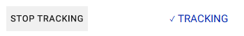
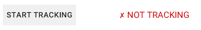

What data it collects
Application colletcts information listed below:
- Pressed key(Key A)
- Pressed input(lower case "a")
- Time between keyboard button presses
- Date and time
- Deleted and replaced symbols
- Program in which button has been pressed
Application analyses this data and provdes you with useful statistics
Is my data safe
Yes, your data is safe.
It's being stored localy in your computer, it does not conect to any server in the network.
How to turn tracking ON or OFF
If you want to turn on tracking you have to press "START TRACKING" button in application.

If this is what you see then tracking has turned ON successfully
If you want to turn OFF tracking you can either turn off the application or press "STOP TRACKING" button. Text in application should change to "NOT TRACKING"
